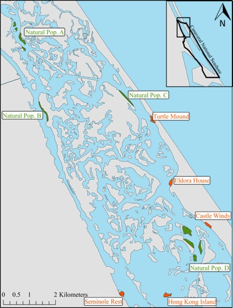

Understanding genetic differences within and among populations can provide insight into many dynamics including conservation and domestication.
During my undergraduate, I worked with Drs. Eric Hoffman and Linda Walters on a project assessing the ability of restoration efforts to maintain genetic diversity within restored populations of smooth cordgrass (Spartina alterniflora) within the Indian River Lagoon (IRL). We found that the current restoration efforts are able to maintain genetic diversity, therefore they ensure the evolutionary potential of these restoration populations.
Gaynor, M. L., Walters, L., andHoffman, E. A. Ensuring effective restoration efforts with saltmarsh grass populations by assessing genetic diversity. Restoration Ecology, In press.
An, H., Qi, X., Gaynor, M. L., Hao, Y., Grebken, S. C., Mabry, M. E., Conant, G. C, Barker, M., Fu, T., Yi, B., and Pires, J. C. (2019). Transcriptome and organellar sequencing highlights the complex origin and diversification of allotetraploid Brassica napus. Nature Communication, 10: 2878.